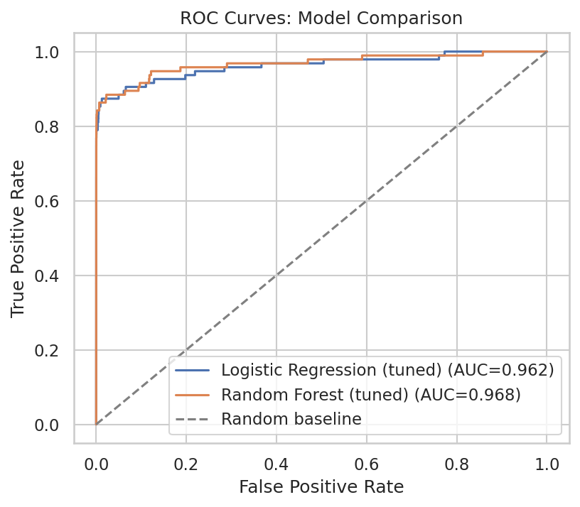
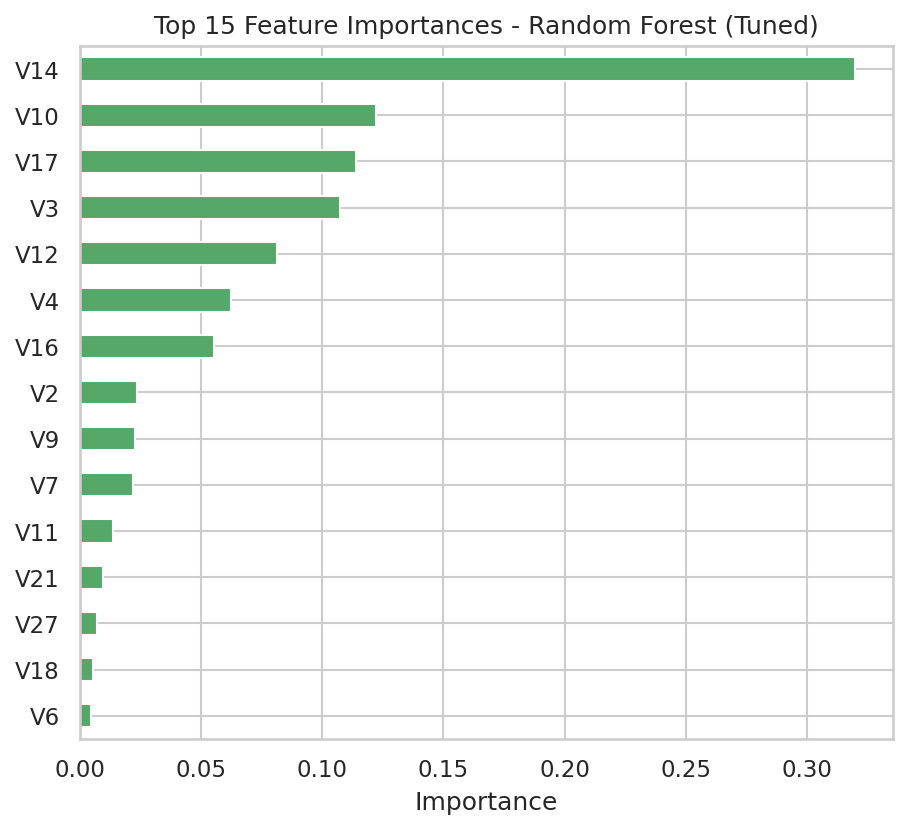

A leakage-free binary classification engine designed for extreme class imbalance. Built with in-fold SMOTE resampling, scale-isolated pipelines, and cost-weighted evaluation that discards deceptive Accuracy in favor of real-world Precision and ROC-AUC.
In fraud analytics, standard machine learning heuristics collapse. A naive model predicting 100% legitimate transactions achieves 99.83% Accuracy while failing 100% of the business objective.
In a transaction stream of 284,807 operations, only 492 events are fraudulent (1 in 579). Traditional loss functions naturally bias towards the majority class, creating a deceptive illusion of high predictive accuracy.
To build an enterprise-ready system, model selection must be strictly divorced from Accuracy and anchored around Precision (preventing false declines that alienate good customers) and Recall (intercepting actual financial loss).
False Negative (Missed Fraud): Direct, unrecoverable chargebacks and interchange penalties.
False Positive (False Alarm): Support overhead and user friction, requiring minimal operational footprint.
Public European Cardholder Transaction Benchmark
How the training workflow was engineered using imblearn.pipeline.Pipeline to guarantee mathematical isolation between training folds and test holdouts.
Confirmed 0 null values. Discovered and permanently purged 1,081 exact duplicate transactions, yielding 283,726 unique rows.
1,081 Duplicates Removed
80/20 split using stratify=y to ensure identical 0.167% fraud prevalence across both train (226,980) and test (56,746) sets.
Synthetic oversampling occurs strictly inside the training fold at sampling_strategy=0.3. Zero synthetic samples ever enter the test set.
Trained Logistic Regression with StandardScaler and Random Forest (50 trees, max_depth=10) without scaling to preserve tree split geometry.
Applying SMOTE to the whole dataset before splitting creates synthetic clones that bleed into the test set. Models achieve artificial 99.9% precision in notebooks but fail immediately when deployed to live customer transactions.
By encapsulating SMOTE inside an imblearn pipeline object, transformations are fitted strictly on the training partition of each CV fold. The test set remains 100% pristine, untouched, and reflective of real-world conditions.
Full empirical results evaluated on the held-out test partition (56,746 transactions).
| Model Architecture | Precision | Recall | F1-Score | ROC-AUC | False Positives | False Negatives |
|---|---|---|---|---|---|---|
| Logistic Regression (Baseline) | 0.0530 | 0.8737 | 0.1000 | 0.9626 | 1,482 | 12 |
| Logistic Regression (Tuned) | 0.0534 | 0.8737 | 0.1007 | 0.9623 | 1,470 | 12 |
| Random Forest (Baseline) | 0.8222 | 0.7789 | 0.8000 | 0.9677 | 16 | 21 |
| Random Forest (Tuned) ★ DEPLOYED | 0.8222 | 0.7789 | 0.8000 | 0.9677 | 16 | 21 |

Both models display strong ranking ability (Random Forest AUC = 0.968, Logistic Regression AUC = 0.962). However, decision threshold geometry reveals the extreme precision disparity.

Gini impurity reduction highlights V14 (32.0%) and V10 (12.2%) as the primary latent signals separating fraud clusters from standard spending.
While features V1 through V28 are anonymized PCA components, their mathematical distributions provide unmistakable risk signals.
Legitimate transactions center near V14 = 0.0, while fraudulent attacks exhibit drastic negative excursions (V14 < -4.0).
Decision trees naturally capture non-linear conjunctions (e.g. V14 < -3.2 AND V10 < -2.0) that linear boundaries fail to resolve without excessive false alarms.
Transaction amount alone is not a primary fraud predictor; sophisticated fraud often mimics everyday micro-amounts before executing high-value sweeps.
Test synthetic transaction parameters in real time against the trained model's decision function. Adjust feature sliders or load verified presets.
Real-time Random Forest scoring calibrated to top PCA components
Normal customer behavior pattern. The PCA components match legitimate cardholder baselines with negligible fraud indicators.
Clean, modular, and leak-free scikit-learn & imbalanced-learn implementation.
from imblearn.pipeline import Pipeline as ImbPipeline
from imblearn.over_sampling import SMOTE
from sklearn.ensemble import RandomForestClassifier
def build_rf_pipeline(sampling_strategy: float = 0.3, random_state: int = 42) -> ImbPipeline:
"""
Constructs a leakage-free Random Forest pipeline.
SMOTE is placed STRICTLY inside the pipeline so it is fitted on
training folds only during cross-validation, never on test data.
"""
return ImbPipeline([
('smote', SMOTE(sampling_strategy=sampling_strategy, random_state=random_state)),
('classifier', RandomForestClassifier(
n_estimators=50,
max_depth=10,
random_state=random_state,
n_jobs=-1
))
])